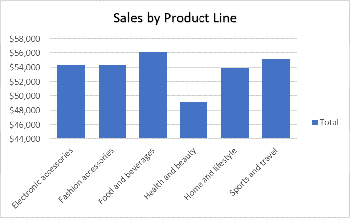
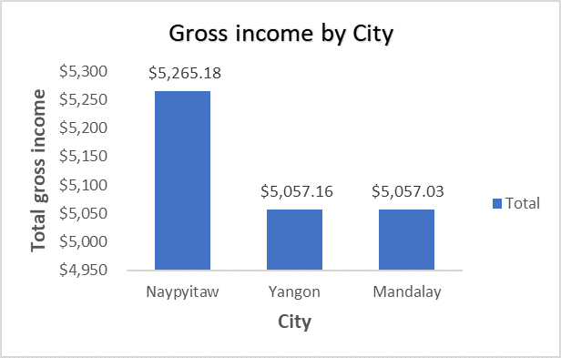
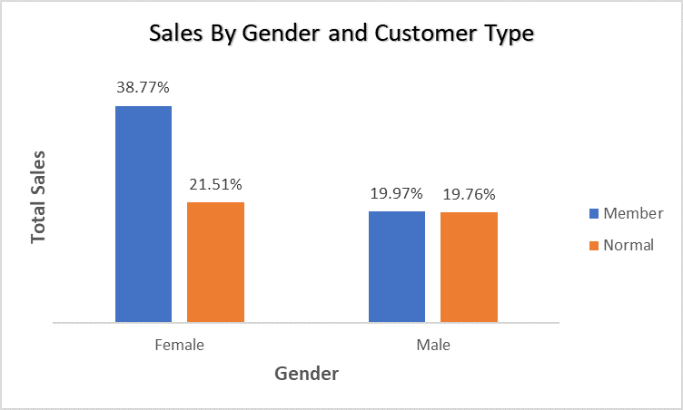
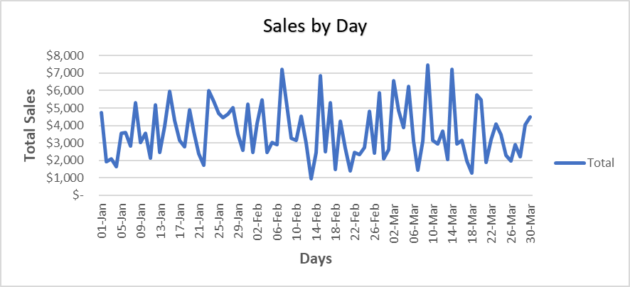

This project focuses on the analysis of a supermarket sales dataset got from Kaggle.com to uncover key business insights and profitability trends. The primary objective of this analysis is to identify top performing product lines, understand sales and profit distribution, and highlight areas for strategic focus to maximize profitability. I examined sales and profit data across various dimensions such as product line, city, and customer type. One of the key findings from this study revealed the top three product lines contributing the highest profits, providing valuable insights for inventory planning, marketing, and resource allocation. This data driven approach helps the supermarket make informed decisions to improve operational efficiency and boost overall sales.
This Dataset was got from Kaggle and it records individual transactions from a supermarket chain in Myanmar, which comprises of invoice ID, branch, city, customer type, gender, product line, unit price, quantity, tax, total sales, date, payment method, cogs, gross margin metrics (gross margin percentage & gross income), and customer rating

The City of Naypyitaw has the highest total profits of $5,265.18 followed by Yangon with total profits of $5,057.16 and Mandalay recorded the least total profits of $5,057.03 in the three months. Naypyitaw had the highest profits in the month of January, Mandalay had the highest profits of 10.66% in the month of February and Yangon had the highest profits of 11.66% in the month of March

The City of Naypyitaw has the highest total profits of $5,265.18 followed by Yangon with total profits of $5,057.16 and Mandalay recorded the least total profits of $5,057.03 in the three months. Naypyitaw had the highest profits in the month of January, Mandalay had the highest profits of 10.66% in the month of February and Yangon had the highest profits of 11.66% in the month of March

In both Customer type customer type, Females account for more sales of $194,671.84 in total than males with a total of $128,294.91 and Considering the Customer type, Members brought in more sales of $189,694.76 than Normal with total sales of $133,271.99.

Saturday is the peak sales day of the week where most customers make sales